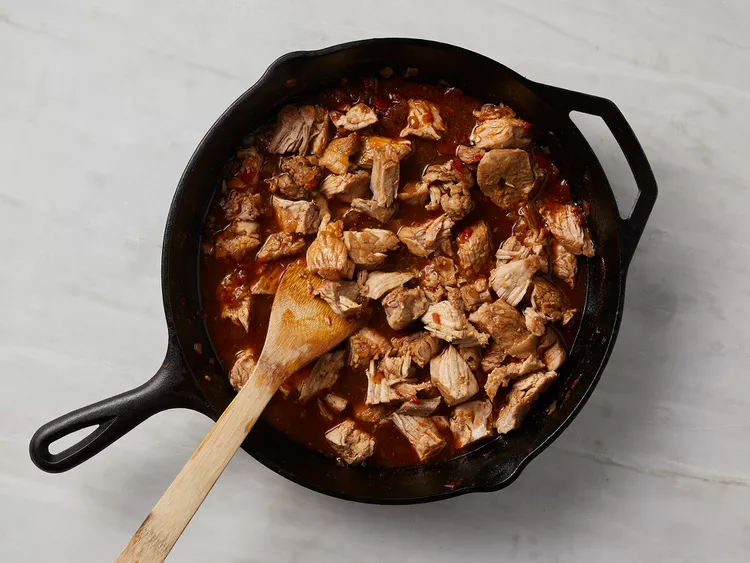

Pork Sinigang is a classic Filipino comfort food known for its savory and tangy flavor profile. This hearty soup features tender pork simmered with fresh vegetables in a tamarind-based broth that gives it a distinctive sour taste. It's the perfect dish for rainy days or whenever you crave something warm and comforting with a unique flavor profile.
Prep Time: 15 mins Cook Time: 1 hr Total Time: 1 hr 15 mins Servings: 4
Step 1: Sauté Onion
Heat oil in a large pot over medium heat. Add the chopped onions and cook until translucent, about 3-4 minutes. This creates a flavorful base for your sinigang broth.
Step 2: Add Main Ingredients
Stir in the chopped ginger and diced tomatoes. Add the pork chops and season with salt. Cover and cook over medium heat until the pork is lightly browned on all sides, about 5-7 minutes.
Step 3: Simmer the Broth
Pour in 4 cups of water and add the tamarind soup base. Bring the mixture to a boil, then reduce heat to low and simmer for about 30 minutes, or until the pork is tender. This slow cooking process allows the flavors to fully develop.
Step 4: Add Vegetables & Serve

Add the fresh green beans to the pot and cook for an additional 5-7 minutes until tender but still slightly crisp. Taste and adjust seasoning if needed. Serve hot in bowls with a side of steamed rice and enjoy your delicious homemade Pork Sinigang!
- Tab Navigate between elements
- Enter Activate buttons
- Alt+N Next step
- Alt+P Previous step